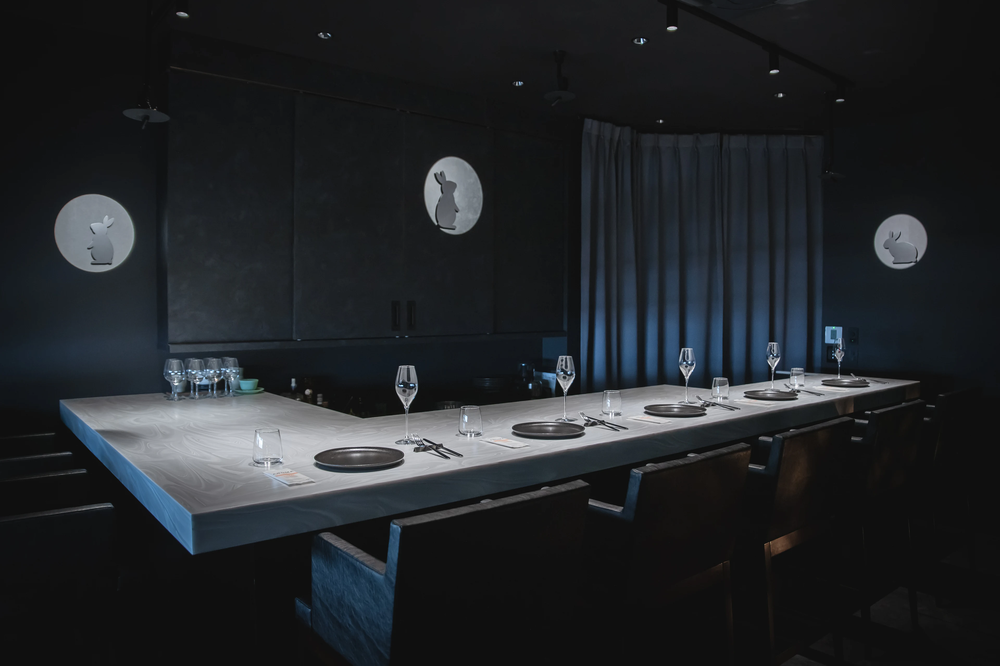

ホーム / 湯島・本郷のワイン来店ガイド
湯島・本郷でワインを楽しむ方へ
本郷三丁目駅と湯島駅の間にある、11席のワインバーTsuki-akari。静かに一人で飲みたい日も、ワインを相談しながら選びたい日も、過ごし方に合わせてお迎えします。このページでは、当店の利用方法と来店前に確認しておきたい情報をまとめました。

一人飲みなら、カウンターでグラスワインを
カウンター7席、テーブル4席。お一人でもグラスワイン一杯から利用できます。グラスワインは1,430円〜、お一人様のチャージは1,650円で、ウェルカムドリンクとおつまみを含みます。表示価格は税込です。
静かに飲みたい方も、ワインの話を楽しみたい方も、ご自身のペースでお過ごしください。
ワイン初心者の方へ：ソムリエへの頼み方
品種や産地を知らなくても大丈夫です。「軽めの赤」「酸味が少ない白」「普段はビール」「この料理に合わせたい」など、普段飲むものや好み、ご予算をお伝えください。ソムリエの山崎翔（やまざき しょう）が、その日のラインナップからご案内します。
料理とのペアリングを楽しみたいとき
ワインに合うおつまみやパスタなどと一緒に、赤・白・スパークリングの香りや味わいを楽しめます。食べたい料理を先に選んでからワインを相談する方法もあります。料理・価格はメニュー・料金をご確認ください。
湯島駅・本郷三丁目駅からのアクセス
- 湯島駅から
- 東京メトロ千代田線・3番出口から徒歩5〜6分。
- 本郷三丁目駅から
- 都営大江戸線・5番出口から徒歩5分。
- 店舗住所
- 東京都文京区湯島2-31-17 DaikatsuBLDG 102。
- 営業
- 18:00〜23:30、日曜定休。Food L.O.22:30 / Drink L.O.23:00。臨時休業・年末年始の案内は店舗情報をご覧ください。
ご来店前によくある質問
予約した方がよいですか？
11席のため事前予約をおすすめします。Googleマップの店舗ページから、表示される食べログまたは一休の予約リンクへ進めます。
香水やPCの利用に決まりはありますか？
ワインの香りを楽しんでいただくため、香水や香りの強い整髪料はお控えください。長時間のPC作業やオンラインミーティングもご遠慮いただいています。
「月あかり」「つきあかり」で探していました
当店の正式名称はWinebar Tsuki-akari、読み方はツキアカリです。湯島・本郷三丁目エリアで「月明かり」「月灯り」とお探しの方も、住所と電話番号で店舗をご確認いただけます。